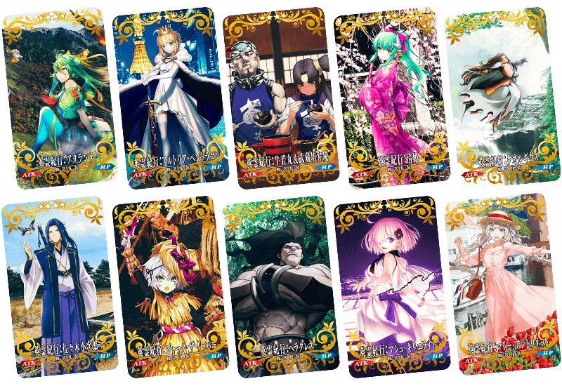
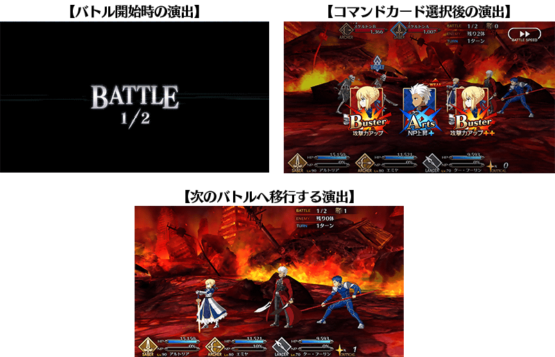
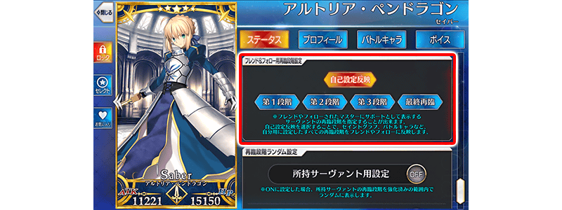
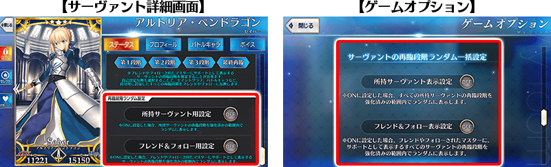
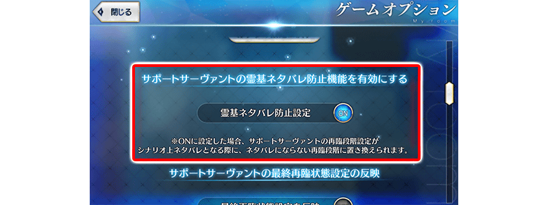

為了記念「FGO 迦勒底放送局 5周年SP ～under the same sky～」的放送，舉辦『「FGO 迦勒底放送局 5周年SP ～under the same sky～」播送前夕宣傳活動』！
※本頁面皆為開發中圖片。會有與實際圖片相異的情況。
◆舉辦期間◆
2020年8月5日(三) 17:00～8月26日(三) 11:59
節目詳細
【節目標題】
「Fate/Grand Order 迦勒底放送局 5周年SP ～under the same sky～」
【播送時間】
2020年8月10日(一) 14:30～
【出演者(敬稱略)】
声優
赤羽根健治 / 植田佳奈 / 大久保瑠美 / 川澄綾子 / 島﨑信長 /
関智一 / 高橋李依 / 田中美海 / 鶴岡聡 / 悠木碧
MC
マフィア梶田
Live Artist
坂本真綾 / Aimer /
Fate/Grand Order 5th Anniversary BAND with 東京都交響樂團 feat. Ayasa
※坂本真綾、Aimer的Live影片只限即時播送，無法於時光機及直播存檔觀看。
◆有關從者真名的注意◆
在2018年12月31日(二) 23:00以後新配信的主線故事及期間限定活動、一部份關卡、宣傳活動及召喚中，會顯示隱藏真名的對象從者真名。
為了記念5周年，舉辦收集殘留從第一特異點 邪龍百年戰爭 奧爾良到Lostbelt No.5 神代巨神海洋 亞特蘭提斯印象的戰鬥「5周年記念回憶關卡」！
通過在迦勒底之門內出現「回憶關卡」，入手期間限定概念禮裝「英靈紀行」等特別報酬吧！
期間限定概念禮裝「英靈紀行」是在FGO5周年記念廣告企劃「under the same sky」新繪插圖所製的概念禮裝！
通過「2015回憶關卡(第一特異點)」與「2018回憶關卡(Lostbelt No.1)」的話，各可入手1張「FGO 5th Anniversary 英靈紀行券」。
1張「FGO 5th Anniversary 英靈紀行券」可交換1張喜愛的「英靈紀行」，最多能入手2張「英靈紀行」！
「回憶關卡」就算通過後也不會消失，能無數次挑戰，可以變更從者和概念禮裝的組合後再次挑戰。 ※關卡通過報酬、戰利品、御主EXP、魔術禮裝EXP、絆點數只可在初次通過時獲得。
◆回憶關卡舉辦期間◆
2020年8月5日(三) 17:00～8月19日(三) 11:59
◆期間限定概念禮裝「英靈紀行」交換期間◆
2020年8月5日(三) 17:00～8月26日(三) 11:59
◆回憶關卡開放條件◆
| 開放時間 | 關卡名 | 開放條件 | 通過報酬 | |
|---|---|---|---|---|
| 2020年 8月5日(三) 17:00 |
2015回憶關卡 (第一特異點) |
通過 第一特異點 邪龍百年戰爭 奧爾良 |
FGO 5th Anniversary 英靈紀行券 1張 |
|
| 2015回憶關卡 (第四特異點) |
通過 第四特異點 死界魔霧都市 倫敦＆ 通過2015回憶關卡(第一特異點) |

|
呼符 1張 | |
| 2020年 8月6日(四) 17:00 |
2016回憶關卡 (第六特異點) |
通過 第六特異點 神聖圓桌領域 卡美洛＆ 通過2015回憶關卡(第四特異點) |
|
呼符 1張 |
| 2016回憶關卡 (終局特異點) |
通過 終局特異點 冠位時間神殿 所羅門＆ 通過2016回憶關卡(第六特異點) |
|
呼符 1張 | |
| 2020年 8月7日(五) 17:00 |
2017回憶關卡 (亞種特異點Ⅰ) |
通過 亞種特異點Ⅰ 惡性隔絕魔境 新宿 ＆ 通過2016回憶關卡(終局特異點) |
|
呼符 1張 |
| 2017回憶關卡 (亞種特異點Ⅲ) |
通過 亞種特異點Ⅲ 屍山血河舞台 下總國＆ 通過2016回憶關卡(終局特異點) |
|
呼符 1張 | |
| 2020年 8月8日(六) 17:00 |
2018回憶關卡 (Lostbelt No.1) |
通過 Lostbelt No.1 永久凍土帝國 安娜塔西亞＆ 通過2016回憶關卡(終局特異點) |
FGO 5th Anniversary 英靈紀行券 1張 |
|
| 2018回憶關卡 (Lostbelt No.2) |
通過 Lostbelt No.2 無間冰焰世紀 諸神黃昏＆ 通過2018回憶關卡(Lostbelt No.1) |
|
呼符 1張 | |
| 2020年 8月9日(日) 17:00 |
2019回憶關卡 (Lostbelt No.4) |
通過 Lostbelt No.4 創世滅亡輪廻 由伽・剎多羅＆ 通過2018回憶關卡(Lostbelt No.2) |
|
呼符 1張 |
| 2019回憶關卡 (Lostbelt No.5) |
通過Lostbelt No.5 神代巨神海洋 亞特蘭提斯＆ 通過2019回憶關卡(Lostbelt No.4) |
|
呼符 1張 | |
| 2020年 8月10日(一) |
？？？ | 通過特異點F | ？？？ | |
※「FGO 5th Anniversary 英靈紀行券」可藉由點擊管理室(ターミナル)畫面右上的「活動報酬」鍵或在達文西工房內的「活動道具交換」點擊活動看板，交換活動道具。 ※藉由通過「回憶關卡」入手的「FGO 5th Anniversary 英靈紀行券」最多2張。
期間限定概念禮裝「英靈紀行」
「英靈紀行」是在FGO5周年記念廣告企劃「under the same sky」描繪，全48張新繪插圖所製的期間限定概念禮裝。
做為交換對象的期間限定概念禮裝「英靈紀行」種類會根據主線關卡的通過狀況，在「Fate/Grand Order」做為從者登場的順序增加。
請注意未通過成為條件的章節，無法交換。
※期間限定概念禮裝「英靈紀行」是以最大限界突破及最大等級的狀態交換。
※全48張的期間限定概念禮裝「英靈紀行」性能皆相同。
 |
★★★★SR |

| 開放條件 | 開放的「英靈紀行」 | |
|---|---|---|
| 通過 第一特異點 邪龍百年戰爭 奧爾良 |
【徳島縣】 英靈紀行:阿塔蘭塔 【東京都】 英靈紀行:阿爾托莉亞・潘德拉剛 【岩手縣】 英靈紀行:牛若丸＆武藏坊弁慶 【和歌山縣】 英靈紀行:清姬 【千葉縣】 英靈紀行:聖喬治 【山口縣】 英靈紀行:佐佐木小次郎 【秋田縣】 英靈紀行:開膛手傑克 【鹿兒島縣】 英靈紀行:海克力斯 【東京都】 英靈紀行:瑪琇・基利艾拉特 【長崎縣】 英靈紀行:瑪莉・安東尼 | |

| 開放條件 | 開放的「英靈紀行」 | |
|---|---|---|
| 通過 第四特異點 死界魔霧都市 倫敦 |
【熊本縣】 英靈紀行:天草四郎 【大阪府】 英靈紀行:迦爾納＆阿周那 【島根縣】 英靈紀行:庫・夫林 【栃木縣】 英靈紀行:玄奘三藏 【京都府】 英靈紀行:酒吞童子 【福岡縣】 英靈紀行:謎之女主角X 【新潟縣】 英靈紀行:風魔小太郎 【大分縣】 英靈紀行:弗蘭肯斯坦 | |
| 開放條件 | 開放的「英靈紀行」 | |
|---|---|---|
| 通過 第六特異點 神聖圓桌領域 卡美洛 |
【佐賀縣】 英靈紀行:伊絲塔 【愛媛縣】 英靈紀行:豹人 【鳥取縣】 英靈紀行:尼托克里絲 【群馬縣】 英靈紀行:貝德維爾 【沖縄縣】 英靈紀行:瑪爾大 【三重縣】 英靈紀行:美杜莎 | |
| 開放條件 | 開放的「英靈紀行」 | |
|---|---|---|
| 通過 終局特異點 冠位時間神殿 所羅門 |
【北海道】 英靈紀行:梅林 【香川縣】 英靈紀行:宮本武藏 | |
| 開放條件 | 開放的「英靈紀行」 | |
|---|---|---|
| 通過 亞種特異點Ⅰ 惡性隔絕魔境 新宿 |
【福島縣】 英靈紀行:燕青 【滋賀縣】 英靈紀行:鈴鹿御前 【岐阜縣】 英靈紀行:夏洛克・福爾摩斯 【山梨縣】 英靈紀行:保羅・班揚 | |
| 開放條件 | 開放的「英靈紀行」 | |
|---|---|---|
| 通過 亞種特異點Ⅲ 屍山血河舞台 下總國 |
【青森縣】 英靈紀行:阿比蓋爾・威廉斯 【埼玉縣】 英靈紀行:艾蕾修卡 【兵庫縣】 英靈紀行:刑部姬 【静岡縣】 英靈紀行:葛飾北齋 【茨城縣】 英靈紀行:加藤段藏 【奈良縣】 英靈紀行:柳生但馬守宗矩 | |
| 開放條件 | 開放的「英靈紀行」 | |
|---|---|---|
| 通過 Lostbelt No.1 永久凍土帝國 安娜塔西亞 |
【山形縣】 英靈紀行:安娜塔西亞 【高知縣】 英靈紀行:岡田以藏 | |
| 開放條件 | 開放的「英靈紀行」 | |
|---|---|---|
| 通過 Lostbelt No.2 無間冰焰世紀 諸神黃昏 |
【長野縣】 英靈紀行:帝王花 【福井縣】 英靈紀行:虞美人 【宮崎縣】 英靈紀行:西格魯德＆布倫希爾德 【富山縣】 英靈紀行:斯卡哈＝斯卡蒂 【石川縣】 英靈紀行:紅閻魔 【岡山縣】 英靈紀行:紫式部 【廣島縣】 英靈紀行:蘭陵王 | |
| 開放條件 | 開放的「英靈紀行」 | |
|---|---|---|
| 通過 Lostbelt No.4 創世滅亡輪廻 由伽・剎多羅 |
【愛知縣】 英靈紀行:森長可 【神奈川縣】 英靈紀行:李奧納多・達文西 | |
| 開放條件 | 開放的「英靈紀行」 | |
|---|---|---|
| 通過 Lostbelt No.5 神代巨神海洋 亞特蘭提斯 |
【宮城縣】 英靈紀行:清少納言 | |
舉辦強化從者能力的特別關卡「從者強化關卡」的第12彈！
本次為了記念「Fate/Grand Order」5周年，合計14位從者的強化關卡在迦勒底之門永久追加！
合計14個強化關卡6天連續在迦勒底之門開放。
◆追加時間◆
2020年8月5日(三) 17:00～
介紹2020年8月5日(三)的維修後新追加的功能。
◆追加時間◆
2020年8月5日(三) 17:00～
戰鬥中的一部份演出修改成可對應倍速設定
目前為止未反映戰鬥速度的下述演出，變得對應倍速設定。另外，點擊戰鬥開始時演出的話變得可跳過。
※關於一部份關卡的戰鬥演出為對象外。

修改成可設定做為支援顯示時的再臨階段
在從者詳細畫面追加「好友＆跟隨用再臨階段設定」。
持有從者在好友＆跟隨做為支援顯示際的再臨階段，可設定分別各從者。
※「卡面」「指令卡」「圖示」「狀態圖示」「戰鬥角色」設定的對象。

| 設定項目名 | 反映內容 |
|---|---|
| 自己設定反映 | 在做為支援顯示時，個別適用該從者所設定的「卡面」「指令卡」「圖示」「狀態圖示」「戰鬥角色」顯示設定。 |
| 第1階段、第2階段、第3階段、最終再臨、靈衣 | 在做為支援顯示時，所有的項目皆以設定的靈基再臨階段或靈衣顯示。 |
從者的再臨階段修改成可隨機顯示
在從者詳細畫面追加「再臨階段隨機設定」。
可設定在每次出擊關卡會隨機切換從者的再臨階段。
持有從者在好友＆跟隨對方做為支援顯示時的再臨階段，每次出擊關卡也能夠隨機。
另外，在遊戲選項追加「從者的再臨階段隨機统一設定」。
這邊是所有持有從者的再臨階段可設定統一隨機。
※初期狀態的設定是「OFF」。 ※遊戲選項的好友＆跟隨用的設定「ON」的話，從者個別設定的「好友＆跟隨用再臨階段設定」的設定會變無效。

有關劇情從者的一部份再臨階段修改成可非顯示
在遊戲選項追加「靈基防止劇透設定」。
在支援選擇時中支援從者的再臨階段「設定有關未到達的劇情、抵觸極為重要發展的再臨階段和靈衣的情況」，可避免劇透兒顯示成別的再臨階段。
※初期狀態的設定是「ON」に。 ※有關已到達的劇情的再臨階段和已開放的靈衣不會因劇透而看不到。

其他還有，期間限定「5周年記念英靈紀行Pick Up召喚(每日交替)」同時舉辦！
關於詳情，請自下述橫幅確認。
■「5周年記念英靈紀行Pick Up召喚(每日交替)」詳細情報